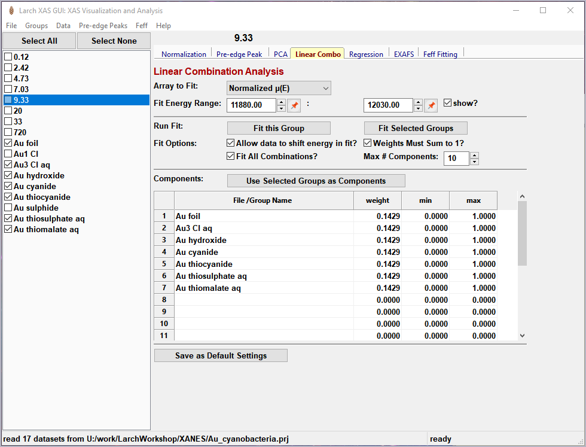
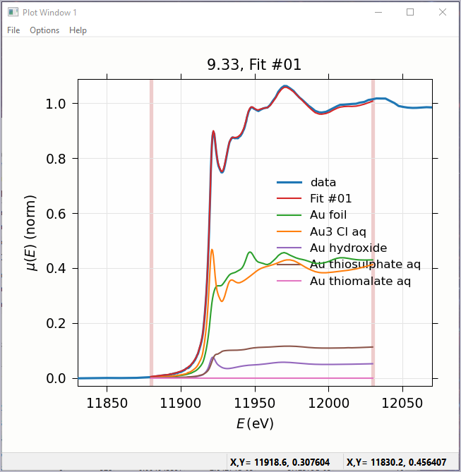
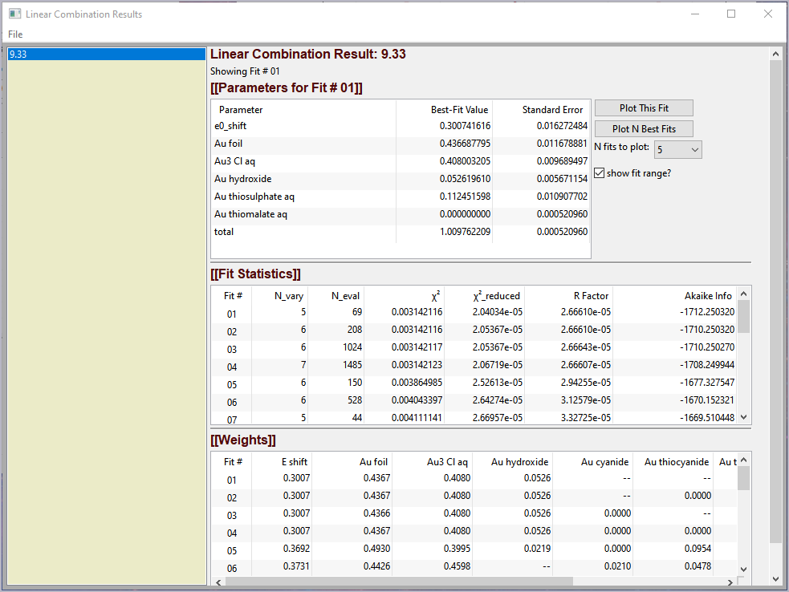
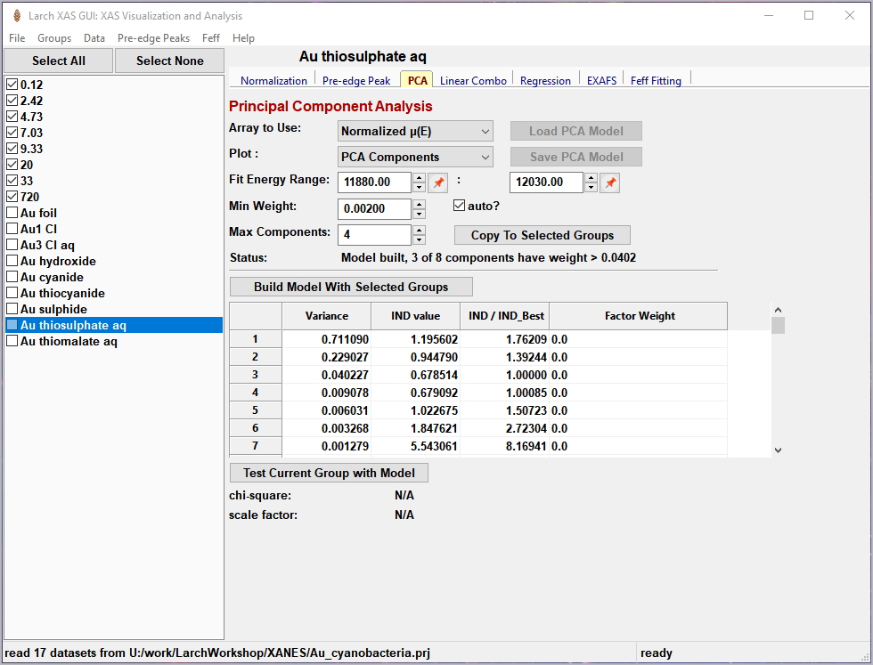
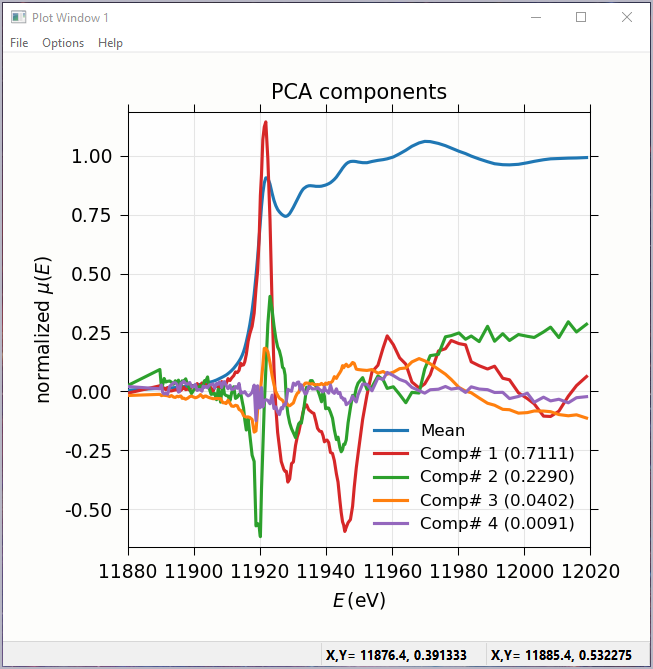
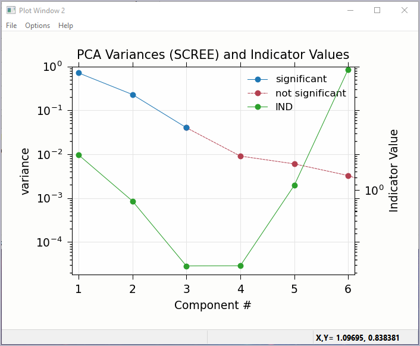
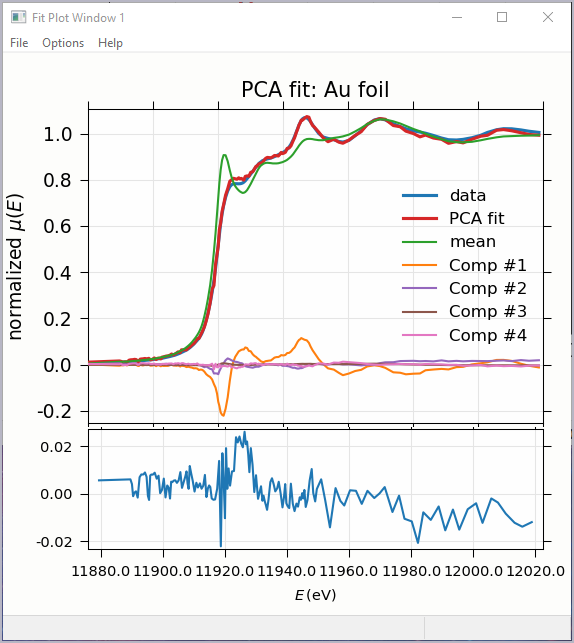

\(\newcommand{\AA}{\unicode{x212B}}\)
5.6. Linear Combination Analysis¶
Linear Combination Analysis is useful for modeling a XANES spectrum as a combination of other spectra. In this approach, one asserts that an unknown spectrum should be a linear combination of spectra of well-characterized samples or “standards”. With the results from a spectral fit, one can then conclude what fraction of atomic environments correspond to those of each standard. For this to work well, the XANES data needs to be normalized consistently.
To use this in Larix, one selects a set of spectra for the “standards” and “builds a model” from the selected groups for the standards, and then fits one or more spectra from unknown samples to get the fractional weight for each sample. Options include:
allowing a single energy shift between unknown spectrum and the set of standards.
trying all combination of standards.
forcing all weights to add to 1.0
{kind=link}

Figure 5.6.1 Linear Combination Fitting, main panel¶
{kind=link}

Figure 5.6.2 Linear Combination Fitting, plot of result¶
{kind=link}

Figure 5.6.3 Linear Combination Fitting, results panel¶
5.7. Principal Component and Non-negative Factor Analysis¶
Principal Component Analysis (PCA) is one of a family of numerical techniques to reduce the number of variable components in a set of data. There are many related techniques and procedures, and quite a bit of nomenclature and jargon around the methods.
In essence, all these methods are aimed at taking a large set of similar data and trying to determine how many independent components make up that larger dataset. That is, the only question PCA and related methods can ever really answer is:
how many independent spectra make up my collection of spectra?
It is important to note that PCA cannot tell you what those independent spectra represent or even what they look like. However, you can also use the results of PCA to ask:
is this *other* spectrum made up of the same components as make up my collection?
{kind=link}

Figure 5.7.1 Principal Component Analysis, main panel¶
{kind=link}

Figure 5.7.2 Principal Component Analysis, Plot of spectral components.¶
{kind=link}

Figure 5.7.3 Principal Component Analysis, Plot of IND statistic and scree-like plot of the importance of each component.¶
{kind=link}

Figure 5.7.4 Principal Component Analysis, Plot of target transformation – using components to best match an unknown spectra.¶
5.8. Linear Regression with LASSO and PLS to predict external variable¶
Linear